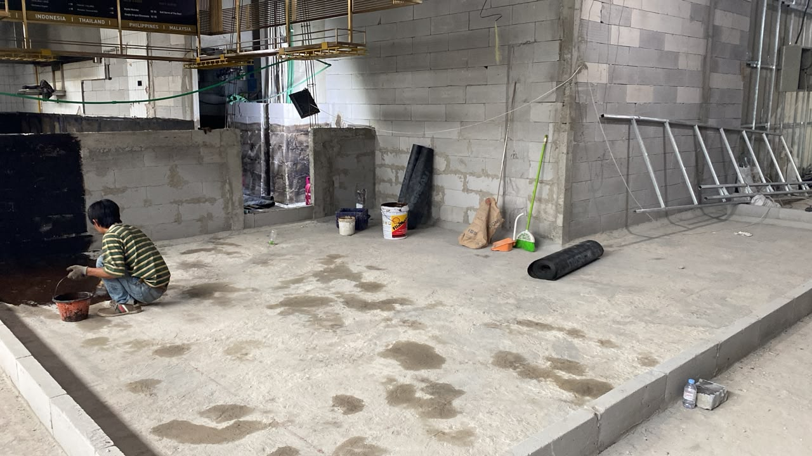

SAIRI BANGUN MANDIRI
Ahli Membran Bakar Pamulang
Membutuhkan solusi waterproofing untuk dak beton atau area bangunan yang rawan bocor? Sairi Bangun Mandiri melayani konsultasi pekerjaan membran bakar untuk membantu menentukan sistem perlindungan yang sesuai dengan kondisi proyek Anda.
Konsultasi via WhatsApp
Apa Itu Waterproofing Membran Bakar?
Sairi Bangun Mandiri melayani jasa membran bakar untuk kebutuhan waterproofing atap dak beton dan area bangunan lainnya. Sebagai penyedia layanan dan kontraktor membran bakar, kami membantu menentukan jenis material serta metode pemasangan yang sesuai dengan kondisi dan kebutuhan setiap proyek.
Bagi Anda yang mencari ahli membran bakar Pamulang atau ahli membran bakar Jabodetabek, SBM menyediakan konsultasi pekerjaan waterproofing berdasarkan kebutuhan lokasi dan cakupan layanan yang dapat kami tangani. Kami juga melayani konsultasi untuk berbagai kebutuhan pemasangan membran bakar Sanded Non-Exposed dan Granule Exposed.
Sebagai spesialis membran bakar, Sairi Bangun Mandiri mengutamakan pemilihan material yang sesuai, persiapan permukaan, dan pelaksanaan pekerjaan yang memperhatikan kondisi lapangan. Jika Anda mencari ahli membran bakar terbaik untuk proyek Anda, silakan konsultasikan pengalaman, metode pekerjaan, dan garansi yang tersedia sebelum menentukan pilihan.
Pemilihan material dan metode pemasangan perlu disesuaikan dengan kondisi lapangan. Pemeriksaan area pekerjaan membantu menentukan persiapan permukaan serta detail aplikasi yang diperlukan.
Jasa Membran Bakar untuk Atap Dak dan Bangunan
Sebagai penyedia jasa membran bakar, Sairi Bangun Mandiri melayani konsultasi waterproofing untuk berbagai area bangunan, antara lain:
- Atap dak beton yang mengalami kebocoran atau membutuhkan perlindungan terhadap air.
- Area atap bangunan yang memerlukan sistem waterproofing membran bakar.
- Area sambungan dan detail permukaan yang sesuai dengan sistem membran.
- Bangunan rumah, ruko, gedung, dan properti lainnya sesuai hasil pemeriksaan.
Bagi Anda yang mencari ahli membran bakar Pamulang atau kontraktor membran bakar di wilayah Jabodetabek, silakan hubungi tim SBM untuk mengonsultasikan kondisi area dan kebutuhan pekerjaan terlebih dahulu.
Pilihan Membran Bakar
Membran Sanded Non-Exposed
Jenis membran dengan permukaan sanded yang umumnya digunakan pada sistem yang tidak dibiarkan terekspos langsung sebagai lapisan akhir. Susunan lapisan pelindung mengikuti spesifikasi sistem dan kebutuhan proyek.
Membran Granule Exposed
Jenis membran dengan permukaan bergranul yang dirancang untuk menjadi lapisan yang terekspos sesuai ketentuan produk. Kesesuaian penggunaannya tetap perlu mempertimbangkan spesifikasi material dan kondisi area.
Jenis membran yang tepat ditentukan berdasarkan kondisi lokasi, fungsi area, dan spesifikasi material yang digunakan.
Pertanyaan Seputar Membran Bakar di Pamulang
Apakah SBM melayani pekerjaan membran bakar di Pamulang?
Silakan hubungi Sairi Bangun Mandiri untuk mengonsultasikan lokasi, kondisi kebocoran, dan kebutuhan pekerjaan di Pamulang. Cakupan serta pengaturan survei dikonfirmasi sesuai proyek.
Apakah membran bakar bisa digunakan untuk atap dak beton?
Membran bakar dapat menjadi salah satu pilihan waterproofing untuk area dak beton. Kesesuaiannya bergantung pada kondisi permukaan, detail konstruksi, spesifikasi material, dan metode aplikasi.
Bagaimana cara meminta konsultasi?
Hubungi SBM melalui WhatsApp dan sampaikan lokasi proyek, area yang mengalami kebocoran, serta foto kondisi jika tersedia. Informasi tersebut membantu proses konsultasi awal.
Konsultasikan Kebutuhan Membran Bakar Anda
Sampaikan lokasi dan kondisi area yang ingin ditangani kepada Sairi Bangun Mandiri.
Hubungi SBM via WhatsApp